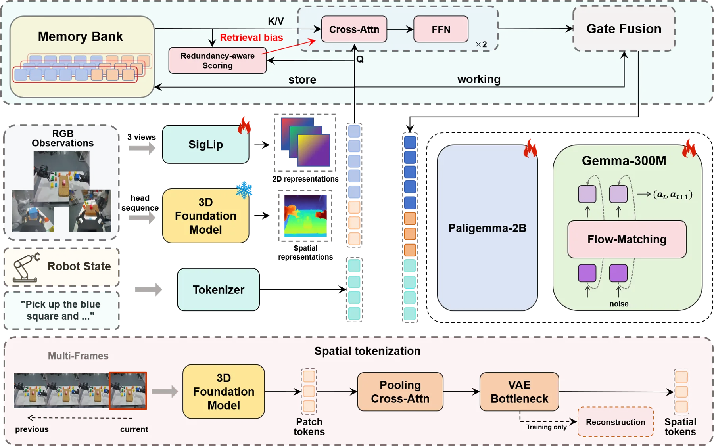
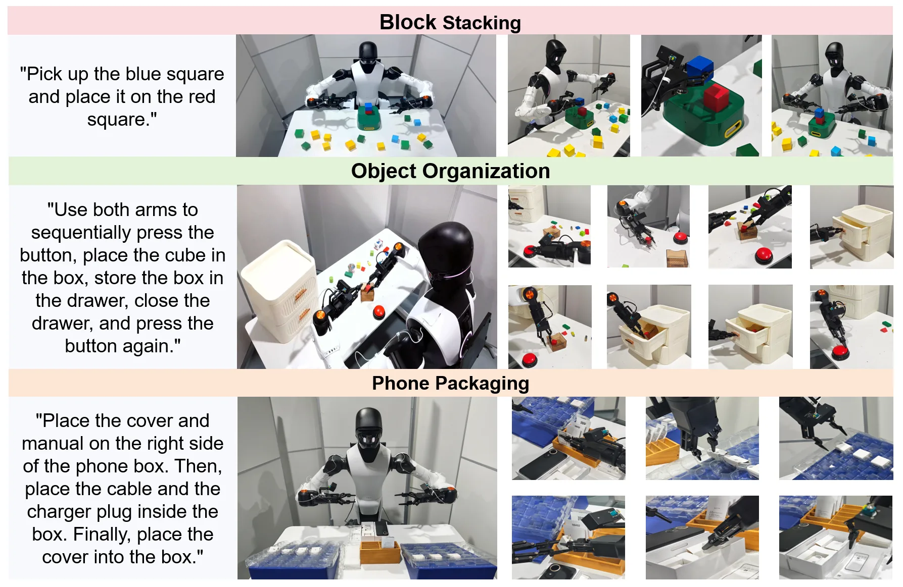

STVLA：把空间几何写进时序记忆的视觉-语言-动作模型
STVLA: Spatial-aware and Temporal-memory forVision-Language-Action Models
这篇的技术选择很克制：冻结 1B 的 VGGT-Ω，只训一个把 patch 特征压成 256 个空间 token 的压缩器，把空间 token 与视觉 token 拼在一起存进有界记忆，检索时用“余弦相似度 × 归一化差”的乘积做注意力偏置。它在四个仿真基准上都小胜，真实任务上因为涉及几何精度与步骤记忆，提升幅度大得多（叠积木 41.7%→100%）。消融也诚实：去掉记忆或去掉空间分支各掉 5 和 3.3 个百分点，β 与输入帧数都是非单调，最优值分别是 0.5 与 4。
Average success on LIBERO
Real block stacking vs pi0.5
Real block stacking SR
作者、单位与技术谱系 · Research context
作者与单位
研究脉络
- π0.5方法基座关系：整个策略骨架（PaliGemma 视觉-语言模型 + flow-matching 动作专家）与训练目标都沿用 π0.5，STVLA 只在其上增加空间 tokenization 与记忆检索。[论文 §III-A、§III-E]
- VGGT-Ω上游几何模型关系：空间特征全部来自冻结的 1B VGGT-Ω，压缩器只做降维与瓶颈，不修改几何模型。[论文 §III-B、§IV-A]
- MemoryVLA上游机制关系：有界记忆 + 门控融合的写法沿用 MemoryVLA（其 Perceptual–Cognitive Memory Bank 与 learned element-wise gate），本篇把记忆内容扩展为视觉+空间。[论文 §II-B、§III-C]
合作网络
- STVLA ↔ π0.5 / VGGT-ΩSTVLA → π0.5 [3]、VGGT-Ω [12]关系：技术依赖[论文 §III-A、§III-B]
- AgiBot ↔ AGIBOT G2 平台AgiBot 作者团队 → AGIBOT G2 双臂机器人关系：自研平台验证[论文 §IV-C]
作者单位来自论文首页（全部标注 AgiBot），技术依赖来自正文显式引用；论文未披露高校合作或导师关系，此处不推断。
方法本质拆解 · What actually changed
是不是微调？
是“冻结大模型 + 训练小模块”的组合：VGGT-Ω（1B）完全冻结，只训练空间压缩器（学习 query 的 cross-attention + 变分瓶颈 + 投影）与 π0.5 的动作侧适配部分，二者用动作损失联合训练。视觉编码器 SigLIP 与语言主干沿用 π0.5 的预训练权重，没有从零训练任何大模型。训练规模是 8 张 H100、每卡 batch 16。
有没有额外约束？
约束体现在三处。结构约束：空间 token 走独立 prefix 段并被 block-causal 掩码隔离，只能段内注意，保证不破坏原有 prefix 的注意力模式。表征约束：压缩器带变分瓶颈 + KL 正则（λ_kl=1e-4），并用特征重构损失（λ_r=1）保证压缩后仍保留几何信息。检索约束：注意力 logits 加 β·s̃_j 的条目级偏置，β=0.5、τ_r=1，分数只做偏置不做硬筛选。
推理/后端到底做了什么？
推理没有额外优化后端：每步取最近 K=4 帧头相机图像过冻结 VGGT-Ω，压缩成 256 个空间 token，与视觉 token 一起检索容量 16 的记忆，2 层 cross-attention 后门控融合，再由动作专家出 8 个 waypoint 的动作块。记忆在 episode 边界重置、超容量丢最旧条目。空间 token 的引入是纯前向的，不涉及 BA、地图更新或在线训练。
方法本质是什么？
本质是把“几何先验”从一次性观测特征改造成可检索的历史记忆单元，并用一个无参数的相似度-非冗余分数决定“看哪段历史”。它没有做的是长时程记忆管理（容量只有 16、episode 内重置），也没有联合优化几何与策略（几何模型全程冻结），因此它改变的是策略的上下文，而不是策略的几何能力本身。
输入 4 帧头相机 RGB + 指令，改变的是记忆内容（视觉 token 之外加入 256 个空间 token），动作是按相关性-非冗余分数做记忆检索与门控融合，直接效果是真实几何敏感任务成功率提升 30–58 个百分点。

结论与问题Conclusion & Motivation
核心结论
STVLA 的结论是：几何结构应该成为“被记住的东西”，而不是只在当前帧算一次。把 VGGT-Ω 特征压成 256 个空间 token 并与视觉 token 一起存入容量 16 的记忆库后，LIBERO 平均 97.8%（π0.5 96.6%）、LIBERO-Mem 41.0%（38.0%）、MIKASA-Robo 45.2%（MemoryVLA 41.2%）、SimplerEnv Bridge 74.0%（MemoryVLA 71.9%）。真实任务上的差距远大于仿真：叠积木 100.0% vs π0.5 41.7%、物品整理 85.0% vs 55.0%、手机包装 45.0% vs 10.0%。
动机与问题
日常操作往往对策略是非马尔可夫的：看起来一样的画面可能对应不同任务阶段，只吃当前帧的策略会重复已完成步骤或卡住；当动作还依赖表面高度、某位置是否空闲这类几何量时，单帧 2D 特征根本表达不了。现成两条路线各有短板：外观记忆在夹爪遮挡或视角改变后检索失效，只看当前帧的空间表示又记不住“哪些部分已经被改变”。作者因此提出：空间表示本身应该进入记忆。
方法Method
方法总览
骨架是 π0.5 的 PaliGemma 视觉-语言模型 + flow-matching 动作专家。当前观测经 SigLIP 得视觉 token，同时经冻结的 1B VGGT-Ω（4 帧头相机、512 px、1024 个 patch 特征、宽度 2048）取当前帧特征，再由一个可训练压缩器（学习 query 的 cross-attention + 变分瓶颈）压成 N_s=256 个空间 token。视觉与空间 token 拼成 X_t 存入有界记忆（容量 L_m=16），用 2 层 cross-attention 检索，检索分数按“相关性 × 非冗余”做标准化后作为注意力偏置；检索结果经门控融合后，空间部分作为独立 prefix 段条件化动作专家。
关键技术细节
打分规则不引入新参数：对每个记忆条目算 r_j=(1+cos(h_j, x̄_t))/2 与 u_j=‖h_j−x̄_t‖/(‖h_j‖+‖x̄_t‖)，取 s_j=r_j·u_j，再在条目间标准化得到 s̃_j，最后 α_j,n=softmax(q·k/√d + β·s̃_j)。分数只做偏置、不排除任何条目，因此检索仍是 query 相关的。空间 token 通过 block-causal 掩码与原始 prefix 隔离：视觉与指令-状态 token 在同一块内双向注意，空间 token 只在自己段内注意，动作 token 可以看全部 prefix 与整个动作块。训练目标为 flow-matching 动作损失 + 重构损失 + KL 正则（λ_r=1，λ_kl=1e-4），推理时用后验均值代替采样。

实验Experiments
实验设置
四个仿真基准：LIBERO（五个 suite，每 suite 训练 40k 步、libero-90 80k 步，每任务 50 trials）、LIBERO-Mem（10 个历史依赖任务，联合训练 120k 步、961 条演示，每任务 20 trials）、MIKASA-Robo（5 个记忆密集任务，40k 步、每任务 250 条演示，100 trials）、SimplerEnv Bridge（BridgeData V2 训练 60k 步，4 个 WidowX 任务，24 trials）。真实任务在 AGIBOT G2 双臂机器人上做，头相机 640×400、双腕 640×528，三个任务分别用 817/237/203 条演示训练 30k/20k/40k 步，每方法 20 trials（叠积木 3 种高度共 60 trials）。指标统一为成功率。
实验数字与比较
仿真：LIBERO 平均 97.8%（π0.5 96.6%、MemoryVLA 96.5%），五个 suite 中四个更好，libero-goal 97.6% vs 94.6%、libero-10 97.6% vs 95.4%；LIBERO-Mem 41.0% vs 38.0%，其中 B×5 与 B×7 各提升 30 个百分点；MIKASA-Robo 45.2%，比 π0.5 高 12.8、比 MemoryVLA 高 4.0；SimplerEnv Bridge 74.0% vs MemoryVLA 71.9%，Stack Cube 54.2% vs 37.5%（+16.7）。真实：叠积木 100.0%（60/60）vs π0.5 41.7%、Spatial Forcing 58.3%、MemoryVLA 88.3%；物品整理 85.0% vs 55.0%/40.0%/35.0%；手机包装 45.0% vs 10.0%/10.0%/15.0%。
消融/失败边界
组件消融（真实叠积木，3 种高度 × 20 trials）：完整模型 100.0%，去掉记忆库与检索 95.0%（失败模式变成更多执行犹豫），去掉空间分支只留 2D 视觉记忆 96.7%（失败模式变成空抓与放置错误）——两条路径的失败模式互补，说明两者都必要。检索偏置强度非单调：β=0.5 时 100.0%，β=0 为 80.0%，β=0.05/0.3/0.8 都是 71.7%，β=1.0 为 81.7%，即“有偏置但不一定越强越好”。VGGT-Ω 输入帧数同样非单调：K=1 88.3%、K=2 93.3%、K=3 85.0%、K=4 100.0%、K=5 86.7%，作者解释更多帧提升几何质量但增加延迟。
局限与迁移Limitations & Transfer
局限与待核验
作者明确写出两点：依赖预训练 3D 基础模型，其特征并不总能给出高质量空间 token；记忆库只维持较短时间窗，对更长时程任务的收益有限。我们的待核验项：正文写“88 NVIDIA H100 GPUs and a batch size of 1616 per GPU”，从数值重复痕迹看应为 8 卡与 batch 16，需对照 TeX 源确认；“三维空间 token 数 256、记忆 16、检索 2 层”这些关键配置正文给了，但压缩器的隐层宽度与参数量未报告；LIBERO-Mem 上 Rot3/Swap2 等多任务反而低于 π0.5（5% 与 25%），说明空间记忆并不对所有子任务有益，这个退化原因原文没有分析；真实任务每方法仅 20 trials，置信区间未给出。
与你研究路线的关系
可迁移模块有两个。第一个是“冻结几何模型 + 轻量压缩器”的接口：把 3D 基础模型的 patch 特征压到语言模型宽度，既不破坏主干预训练表示，又能把几何带进决策，这比再训一个端到端 VLA 便宜得多，适合我们在算力受限时复用现成几何模型。第二个是检索打分的写法：只用相似度与非冗余的乘积做注意力偏置、不加可学习 scorer，参数零成本且可解释，可以直接搬到我们的地图检索/关键帧选择里。下一步实验：在我们自己的操作或导航任务上固定 π0.5 主干，只替换记忆内容（2D 视觉 / 当前帧空间 / 视觉+空间），并做 β 与 K 的二维扫描，确认收益来自几何信息本身而不是记忆容量。